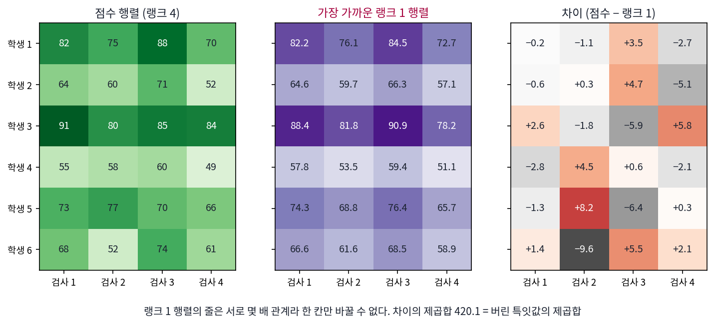
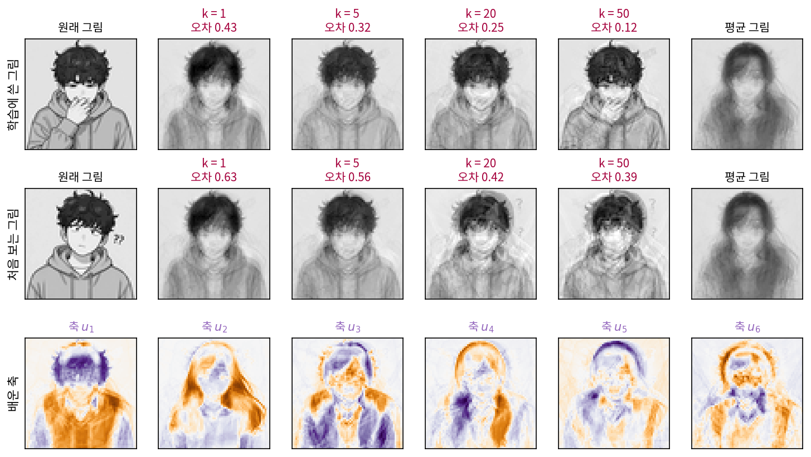
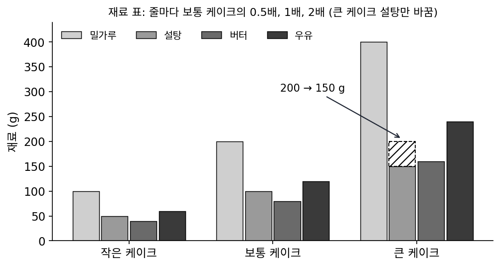
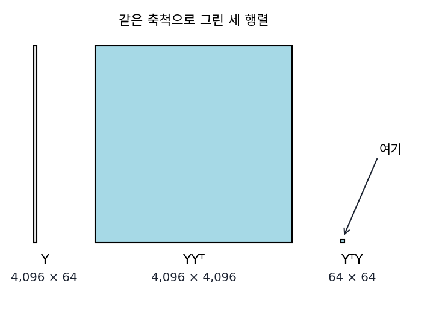
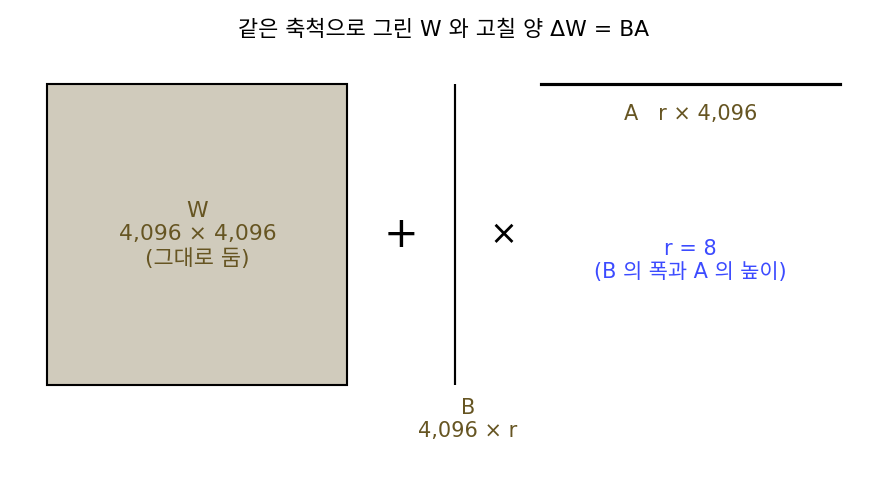

저랭크 근사: 에커트–영 정리
점 하나가 칸 두 개였을 때는 직선 하나로 충분했지만 그림은 다르다. 시리즈 공용 인물 그림을 64 × 64 회색 그림으로 줄이면 그림 한 장이 4,096칸, 곧 4,096차원 공간의 점 하나다. 이런 점 수십 개를 축 하나로 적을 수는 없고, 축 k개가 펼치는 평평한 면이 필요한데, 그러면 가장 좋은 면을 어떻게 찾을까? 첫째 주성분을 찾고, 그 방향을 빼고 남은 자료에서 다시 첫째 주성분을 찾는 식으로 하나씩 쌓으면 될 것 같다. 하지만 하나씩 욕심껏 고른 축 k개가, 축 k개를 한꺼번에 골랐을 때의 가장 좋은 면과 같다는 보장이 있을까? 그리고 4,096 × 4,096짜리 공분산 행렬의 고유벡터는 어떻게 계산할까?
역사: 시카고의 물리학자 둘과 점수 행렬
1936년 9월, 막 창간된 학술지 『사이코메트리카(Psychometrika)』 제1권 3호에 시카고 대학의 칼 에커트(Carl Eckart)와 게일 영(Gale Young)이 쓴 여덟 쪽짜리 논문이 실렸다. 제목은 「한 행렬을 더 낮은 랭크의 행렬로 근사하기(The Approximation of One Matrix by Another of Lower Rank)」다. 에커트는 양자역학으로 이름난 물리학자였고, 영은 그해 수리물리학 석사를 받은 대학원생이었다. 논문의 첫 문장은 심리학의 요인 이론에서 출발한다. N명이 검사 n개를 보아 생긴 n × N 점수 행렬이 랭크가 더 낮은 행렬로 충분히 근사된다는 것이 요인 이론의 기본 가정인데, 그렇다면 랭크 r인 행렬 가운데 주어진 점수 행렬에 가장 가까운 것은 무엇이냐는 물음이다. 두 사람은 근사 행렬의 칸들이 서로 독립이 아니어서 최소제곱의 식을 곧바로 세울 수 없다는 어려움을, 행렬을 표준꼴로 돌려 놓고 푸는 방법으로 넘었다. 답은 늘 있고 대개 하나뿐이었다. 다만 논문은 이론으로는 간단해도 실제 자료에 쓰려면 숫자 계산이 엄두를 못 낼 만큼 많을 수 있다고 덧붙였다. 손으로 계산하던 시대의 이야기다.

같은 결과를 1907년에 슈미트(Erhard Schmidt)가 먼저 증명했다는 것과 특잇값 분해 자체의 역사는 아래 길잡이의 최적화 책 절에 있다.

가장 가까운 랭크 r 행렬이면 칸마다 차이를 제곱해서 최소제곱으로 풀면 되지 않아요? 회귀 숙제처럼요.

회귀에서는 맞출 숫자를 하나하나 따로 움직일 수 있었죠. 랭크 1인 2 × 2 행렬에서 왼쪽 위 칸 하나만 바꿔 볼까요?

랭크 1이면 둘째 줄이 첫째 줄의 몇 배여야 하니까… 한 칸만 바꾸면 그 배율이 깨져요. 다른 칸도 따라 움직여야 하네요.

논문이 말한 「근사 행렬의 칸들이 서로 독립이 아니다」가 그거예요. 두 사람은 행렬을 표준꼴로 돌려 놓고서야 풀었어요. 답을 찾은 뒤에도 실제 자료에 쓰기에는 계산이 엄두를 못 낼 만큼 많을 수 있다고 적었고요.

인물 그림 4,096 × 64 행렬의 특잇값 분해는 제 노트북에서 1초도 안 걸리는데요. 그때는 정리를 알아도 그 셈을 손으로 해야 했으니 쓸 데가 마땅치 않았겠네요.

그런데 큰 특잇값만 남기면 된다면, 첫째 주성분을 찾고 빼고 다음을 찾는 식으로 하나씩 쌓아도 같은 답이 나오는 거예요?
인물 그림 64장을 축 k개로
공용 인물 그림 70장 가운데 6장을 시험용으로 미리 떼어 두고(씨앗 0), 나머지 64장으로 축을 배운다. 이 책의 관례대로 그림 하나를 4,096칸짜리 열로 세워 늘어놓으면 자료는 4,096 × 64 행렬 X가 된다. 그림마다 평균 그림을 빼고, 남은 행렬을 특잇값 분해한다. 특잇값 분해는 어떤 행렬이든 「돌리기, 축마다 늘이기, 돌리기」의 곱 UΣVᵀ로 쪼개는 것이었다. 점을 열로 놓았으므로 왼쪽 행렬 U의 열은 그림 공간(4,096차원)의 방향이고, 오른쪽 행렬 V의 열은 그림 64장에 매긴 무게다. 평균을 뺀 64장은 많아야 63차원 안에 있으므로 0이 아닌 특잇값은 63개다. 가장 큰 것이 50.38, 다섯째가 22.80, 스무째가 10.94, 쉰째가 6.20이다.
이 왼쪽 축이 바로 주성분이다. 공분산 행렬은 (X − 평균)(X − 평균)ᵀ/n인데, 여기에 분해를 넣으면 가운데의 VᵀV가 단위행렬로 지워져 UΣ²Uᵀ/n만 남는다. 공분산의 고유벡터가 U의 열이고 고윳값이 σ²/n이다. numpy나 scikit-learn처럼 점을 행으로 늘어놓는 곳에서는 행렬이 전치되므로 같은 축이 오른쪽 축 V로 나온다.
앞의 축 k개만 남기면 그림마다 숫자 k개(그 축 위의 좌표)로 적고, 되살릴 때는 평균 그림에 좌표만큼 축을 더한다. 아래 그림의 위 줄은 학습에 쓴 그림, 가운데 줄은 처음 보는 그림을 축 1, 5, 20, 50개로 되살린 것이다. 오차는 되살리고 남은 차이의 제곱합을 평균 그림과의 차이의 제곱합으로 나눈 값이다. 축 하나로는 머리와 옷의 큰 덩어리만 나온다. 축이 늘면 학습 그림은 손과 표정까지 살아나지만, 처음 보는 그림에는 다른 그림의 흔적이 겹쳐 남는다. 아래 줄은 배운 축 여섯 개를 그림으로 그린 것이다.

그러면 축 k개로 할 수 있는 가장 좋은 근사는 무엇일까? 학습 그림 64장 전체를 랭크 k인 행렬로 흉내 낸다고 하자. 행렬의 칸마다 차이를 제곱해 더한 오차로 재면, 특잇값 분해에서 큰 특잇값 k개만 남기고 나머지를 0으로 바꾼 행렬이 가장 가깝고, 그때 남는 오차는 버린 특잇값의 제곱합과 정확히 같다. 이 사실을 에커트–영 정리 (가장 가까운 저랭크 행렬은 특잇값을 자른 것 / Eckart–Young theorem)라 한다. 랭크가 낮은 행렬, 곧 독립인 열이 k개뿐인 행렬로 원래 행렬을 흉내 내는 일을 저랭크 근사라 한다. 특잇값이 큰 순서로 쌓은 축 k개가 곧 한꺼번에 고른 가장 좋은 k개이므로, 정리 덕분에 축을 하나씩 욕심껏 쌓아도 손해가 없다. 인물 그림에서 무작위로 고른 축 5개는 200번 시도한 가운데 가장 좋은 것도 오차가 0.998이었지만, 특잇값으로 자른 축 5개는 0.467이었다.
ML에서: 고유얼굴
얼굴 그림의 주성분은 얼굴 인식의 첫 방법 가운데 하나였다. 시로비치(Lawrence Sirovich)와 커비(Michael Kirby)는 1987년 『미국 광학회지 A』에 얼굴 그림을 적은 수의 축으로 나타내는 방법을 실었다. 턱(Matthew Turk)과 펜틀런드(Alex Pentland)는 1991년 「인식을 위한 고유얼굴(Eigenfaces for Recognition)」에서 그 축 위의 좌표로 사람을 가려내는 체계를 만들었다. 위 그림 아래 줄 같은 축 그림이 고유얼굴이다. 칸이 수만 개인 얼굴 그림의 공분산 행렬은 당시 컴퓨터로 고유벡터를 구하기에 너무 컸는데, 턱과 펜틀런드는 그림 수만큼의 작은 행렬로 같은 축을 얻는 방법을 썼다. 그 방법이 무엇인지는 아래 문제 5에서 찾아본다. 오늘날 큰 언어 모델을 고칠 때 쓰는 LoRA도 같은 정리에 기대는데, 고칠 양이 낮은 랭크라면 가는 행렬 두 개의 곱으로 충분하다는 것이다(문제 6).
문제 4. 레시피 표
빵집의 케이크 세 가지(작은, 보통, 큰)에 드는 재료(g)를 표로 적었다. 작은 케이크: 밀가루 100, 설탕 50, 버터 40, 우유 60. 보통 케이크: 200, 100, 80, 120. 큰 케이크: 400, 200, 160, 240. (가) 이 표의 숫자 12개를 숫자 몇 개로 적을 수 있는가? 이 표의 랭크는? (나) 큰 케이크만 덜 달게 설탕을 150 g으로 바꾸었다. 특잇값이 594.70, 23.18, 0이라면, 랭크 1로 근사했을 때 칸마다 차이를 제곱해 더한 오차는 얼마인가? (다) 그 랭크 1 근사에서 오차가 가장 큰 칸은 어디일까?

(가)는 보통 케이크 레시피 네 숫자에 크기 배율 0.5, 2만 있으면 되니까 6개요. 보통 케이크의 배율 1은 안 적어도 알고요. 줄마다 보통 케이크의 몇 배니까 랭크 1이에요.
좋아요. (나)에서 바뀐 칸은 하나뿐이에요. 랭크 1로 근사하면 오차는 얼마일까요?
바뀐 칸만 틀리게 두고 나머지는 원래 표대로 두면 되니까 50² = 2,500이요. 그게 가장 좋은 랭크 1이겠죠.
에커트–영 정리대로라면 오차는 버린 특잇값의 제곱합이야. 23.18² + 0² = 537.2. 2,500보다 훨씬 작아.
다섯 배 가까이 작네요. 바뀐 칸만 틀리게 두는 게 가장 좋은 줄 알았는데요. 어떻게 그럴 수 있죠?
그 50 g 차이를 꼭 한 칸이 다 져야 할까요?
한 칸에 몰린 50 g 차이를 여러 칸에 나눠 지는 거 아닐까요? 계산해 보니 랭크 1 근사는 큰 케이크 설탕을 161.0으로, 보통 케이크 설탕을 82.9로, 작은 케이크 설탕을 41.5로 둬요.
칸마다 차이는 얼마나 되죠?
큰 케이크 설탕 칸이 11.0, 보통 케이크 설탕 칸이 17.1이에요. 나머지 칸도 조금씩 어긋나고요. 어, 보통 케이크가 더 많이 틀렸네요?

제곱은 큰 차이를 크게 벌주니까 한 칸에 50을 몰아 두는 것보다 여러 칸에 작게 나누는 게 합이 작아요. (다)의 답은 보통 케이크의 설탕 칸이고요. 바꾸지도 않은 칸이 오차가 가장 크네요.
문제 5. 4,096 × 4,096 대신 64 × 64
인물 그림 학습 자료는 4,096 × 64 행렬이고, 평균을 뺀 행렬을 Y라 하자. 특잇값은 앞에서부터 50.38, 41.81, 30.95, 25.87, 22.80, …이고 전체 제곱합은 12,077.63이다. (가) 축 둘로 되살린 학습 그림 64장의 상대 오차는 얼마인가? (나) 주성분을 구하려면 4,096 × 4,096 행렬 YYᵀ의 고유벡터가 필요하다. 그 대신 64 × 64 행렬 YᵀY의 고유벡터 v를 구했다면 거기서 주성분을 어떻게 얻는가? 두 행렬의 고윳값은 어떤 사이인가?

(가)는 버린 특잇값 제곱합을 다 더해야 하는데, 뒤의 특잇값을 다 모르잖아요.
버린 것을 다 더하는 대신 남긴 것을 빼면요?

아, 전체에서 빼면 되네요. 50.38² + 41.81² = 2,538.1 + 1,748.1 = 4,286.2, 전체 12,077.63에서 빼면 7,791.4, 나누면 0.645예요. 64.5%가 남아요.

(나)는 안 될 것 같아요. YᵀY는 그림끼리의 내적을 모은 표라서, 고유벡터 v도 64칸짜리, 그림마다의 무게예요. 그림 공간의 방향은 아니잖아요.
그림마다의 무게가 있으면, 그 무게로 그림들을 섞어 볼 수 있죠? YᵀYv = λv의 양쪽 왼쪽에 Y를 곱해 보세요.
YYᵀ(Yv) = λ(Yv)예요! Yv가 큰 행렬의 고유벡터고 고윳값도 같아요. 그림 공간의 방향이 아니라고 한 게 성급했어요.

Yv는 그럼 뭐야? 그림이야?
그림 64장을 v의 무게로 섞은 그림. 그걸 길이 1로 맞추면 주성분이야.
특잇값 분해로 보면 v와 Yv는 각각 무엇일까요?
v가 오른쪽 축이고 Yv = σu니까, 고윳값은 둘 다 σ²이에요.
스크립트로 64 × 64 행렬에서 구한 축 다섯 개를 원래 축과 비교하니까 코사인이 다 1이에요(소수 여섯째 자리까지). 계산도 4,096 × 4,096 행렬 대신 64 × 64 행렬이라 훨씬 가볍고요.
문제 6. LoRA는 숫자 몇 개를 배우나
언어 모델의 한 층에 4,096 × 4,096 가중치 W가 있다. LoRA는 W를 그대로 두고, 고칠 양 ΔW를 4,096 × r 행렬 B와 r × 4,096 행렬 A의 곱으로 둔다. (가) r = 8이면 배울 숫자는 몇 개이고, ΔW의 칸을 모두 배울 때의 몇 %인가? (나) ΔW = BA의 랭크는 많아야 얼마인가? (다) 모든 가중치를 파인튜닝해서 얻은 ΔW가 있다면, 그것을 랭크 8로 가장 잘 흉내 내는 행렬은 무엇인가?

(가)는 4,096 × 8 + 8 × 4,096 = 65,536개요. 통째면 4,096² = 16,777,216개니까 0.391%예요. 250분의 1쯤이네요.
(나)는 BA의 열은 모두 B의 열 8개를 섞은 거니까 랭크는 많아야 8이야.
그러면 랭크 8인 4,096 × 4,096 행렬은 숫자 몇 개로 정해질까요? 65,536개보다 적을까요?
B와 A를 바꿔치기할 여유가 있지 않을까요? B에 8 × 8 행렬 G를 곱하고 A 앞에 G⁻¹을 곱해도 곱은 같으니까요.
그 G 하나에 숫자가 몇 개 들어 있죠?
8² = 64개요. 그만큼이 군더더기니까 자유도는 8 × (2 × 4,096 − 8) = 65,472개예요. 차이는 64개뿐이네요.

그래요. (다)는요?
에커트–영 정리로, ΔW를 특잇값 분해해서 큰 특잇값 8개만 남긴 거요. 그런데 LoRA는 그렇게 계산하지 않고 B, A를 처음부터 경사하강으로 배우잖아요.
칸을 모두 배운 ΔW를 미리 가지고 있지 않으니까 자를 수가 없지.
그럼 처음부터 랭크 8 안에서만 찾는다는 건 무엇을 믿는 걸까요?

고칠 양이 원래부터 낮은 랭크 근처에 있다는 거요. LoRA의 논문 제목이 「낮은 랭크 적응」인 것도 그 가정을 믿고 처음부터 그 면 위에서만 찾자는 거네요. 논문 초록도 파라미터가 1,750억 개인 GPT-3 175B의 모든 가중치를 파인튜닝할 때보다 배울 숫자가 1만분의 1로 준다고 적었고, 그 가정이 맞는지 따로 실험해 보았다고 했어요.

찌개를 냄비 가득 끓였다가 1인분만 덜어 내는 게 특잇값 자르기면, LoRA는 처음부터 1인분 냄비에 끓이는 거네요.